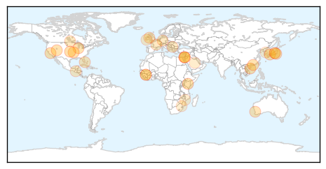

Unknown
30-Day Web Trend
0 alerts, 0 warnings

30-Day Twitter Trend
2 alerts, 0 warnings

Article Locations
Article Confidences

Top Articles:
- 0.992
- Camels in Kenya test positive for MERS virus: study - Xinhua
- 0.965
- Preparing for flu season in Williamsburg
- 0.944
- Nationwide Flu Mist Shortage Creating Obstacles Locally
- 0.917
- Chicago Tribune
- 0.917
- Chicago Tribune
- 0.917
- Chicago Tribune
- 0.917
- Chicago Tribune
- 0.917
- Chicago Tribune
- 0.917
- Chicago Tribune
- 0.917
- Chicago Tribune
- 0.917
- Chicago Tribune
- 0.917
- Chicago Tribune
- 0.866
- Japan's Abe sends ritual offering to Yasukuni Shrine ahead of trilateral summit
- 0.848
- Flu already in Ontario
- 0.831
- Typhoid Outbreak Among Palestinian Refugees
- 0.785
- norwegian star
- 0.769
- Alert issued after chemotherapy treatment for Irish cancer patients 'contaminated'
- 0.728
- Salmonella outbreak includes Alberta
- 0.702
- Kerry to meet Netanyahu in bid to calm West Bank unrest
- 0.702
- Mexican drug lord 'El Chapo' injured while eluding capture
- 0.702
- Hungary closes border with Croatia to stem migrant flow
- 0.702
- Guinea’s president re-elected in contested vote, provisional results show
- 0.702
- Guinea’s Condé wins re-election in disputed presidential vote
- 0.702
- German mayoral candidate stabbed over support for refugees
- 0.633
- Gran with cancer tells of concern over chemo 'contamination' scare
- 0.586
- Malaria eradication
- 0.583
- Teams sent to recruit doctors from 9 countries
- 0.568
- Five babies die in Free State due to haemorrhaging
- 0.567
- KBS World Radio
- 0.509
- Funding woes leave hospitals on life supportThe Nation Online
- 0.502
- Senate probe into Japanese encephalitis in Cordillera sought
Top Tweets:
-
No tweets found for Oct 17, 2015
Ebola
30-Day Web Trend
3 alerts, 0 warnings

30-Day Twitter Trend
2 alerts, 0 warnings

Article Locations

Article Confidences

Top Articles:
- 1.000
- Return of Ebola concerning
- 1.000
- Condition of British Nurse Cafferkey remains critical as more is known about the Ebola virus in Sierra Leone
- 1.000
- Ebola-Driven Sexually Transmitted Diseases May Pose a Bigger Threat to Public Health Than The Actual Virus
- 1.000
- Two new cases in Guinea, one recovered
- 0.999
- So It Turns Out There's A Lot We Don't Know About Ebola
- 0.999
- Guinea reports two more Ebola cases; review sheds light on CNS complications
- 0.998
- First Effective Vaccine Against Ebola Could Soon Be a Reality
- 0.997
- ‘Two new Ebola cases in Guinea’
- 0.997
- Two new Ebola cases found in Guinea, dashing hopes
- 0.997
- Condition of hospitalized Ebola nurse in United Kingdom worsens
- 0.997
- Two new Ebola cases found in Guinea, dashing hopes
- 0.997
- Ebola survives in semen much longer than we thought
- 0.997
- How Perm Sec Wanted Leaving Health Ministry Fearing Ebola Resurgence
- 0.997
- Africa - News and Analysis
- 0.995
- Two new Ebola cases in Guinea show virus still spreading
- 0.994
- Ebola 'relapse' case in UK takes virus specialists to uncharted waters
- 0.979
- Ebola upgraded to STD status, found to be infectious for longer than previously thought
- 0.934
- Sexual transmission of Ebola virus in Liberia confirmed using genomic analysis
- 0.619
- Bishop thanks Pope Francis for being close during the Ebola crisis Vatican Radio
- 0.609
- Bishop thanks Pope Francis for being close during the Ebola crisis
- 0.579
- Time ticking on Lyme disease breakthrough
- 0.520
- Employee health focus of meeting
Top Tweets:
- 0.991
- UN: 2 new Ebola cases in Guinea show virus still spreading - http://t.co/Ml2TL3NTiG ebola
- 0.991
- UN: 2 new Ebola cases in Guinea show virus still spreading - http://t.co/9AARVw949a ebola
- 0.991
- The Ebola Virus Stays for Months Even After Body Recovers - http://t.co/XuFljScAXf ebola
- 0.991
- The Ebola Virus Lingers In Semen, Should You Be Worried? - http://t.co/KR1ynH4UnZ ebola
- 0.991
- Ebola outbreak update: 2 new cases emerge in Guinea - http://t.co/V3J46DUSZt ebola
- 0.990
- 5 Facts About Ebola Virus - https://t.co/ZoQE8rDI35 ebola
- 0.989
- A Notable Honor for Ebola Response Team as it Planned and Prepared for the Ebola Virus - http://t.co/YAUiFpV7Vf ebola
- 0.980
- Sierra Leone claims 21 days Ebola free - http://t.co/iTaIeWEni5 ebola
- 0.979
- New Ebola cases positive in Guinea, says WHO - http://t.co/4srGmOPgjt ebola
- 0.974
- Ebola outbreak may enter third year after new cases in Guinea - http://t.co/YIeDEyQ485 ebola
- 0.970
- How Perm Sec Wanted Leaving Health Ministry Fearing Ebola Resurgence - http://t.co/Fa9WDdSzkv ebola
- 0.968
- Nurse hospitalized for Ebola – again - http://t.co/4bqigx47jW ebola
- 0.967
- Ebola Outbreak Not Yet Over: WHO Reports New Infections In Guinea - http://t.co/QISCJdo8Jb ebola
- 0.965
- Two new Ebola cases reported in Guinea - http://t.co/devz6hwXIS ebola
- 0.965
- Ebola Outbreak: 3 Things We Needed to Learn - https://t.co/bsrC5xq50o ebola
- 0.958
- Two New Cases Of Ebola Have Surfaced In Guinea - http://t.co/ahXsM5j8Xt ebola
- 0.953
- What Are We Doing to Stop the Deadly Ebola Virus? - http://t.co/BLYjUtQe5W ebola
- 0.949
- Ebola Virus Can Persist in Semen For At Least Nine Months: WHO - http://t.co/y2duwyrTrb ebola
- 0.948
- First case of STD Ebola transmitted after someone recovered - http://t.co/LgFcGxDDfL ebola
- 0.947
- 'Two new Ebola cases in Guinea' - http://t.co/glA9mnhhrs ebola
- 0.945
- Nurse who contracted Ebola hospitalized - http://t.co/n5jG32wec1 ebola
- 0.934
- Confirmed: Ebola sexually transmitted - http://t.co/Uma77nakdK ebola
- 0.932
- Rename app to ebola? - http://t.co/sG8Q2CYsGQ ebola
- 0.932
- Ebola-Driven Sexually Transmitted Diseases May Pose a Bigger Threat to Public Health Than The ... - http://t.co/TjMlLCqdCn ebola
- 0.922
- Ebola Update: What You Need to Know About Sexually Transmitted Ebola - http://t.co/jhbae0IiTK ebola
- 0.918
- Caring for a Patient Under Investigation for Ebola - http://t.co/UQj0NtNg8J ebola
- 0.917
- Govt Releases Final Lab Result On Calabar Ebola Scare - http://t.co/j7doT5Lxfx ebola
- 0.903
- Ebola scare: UCTH emergency ward remains shut, says FG - http://t.co/ltQddzMfrA ebola
- 0.903
- An interesting development from Ebola crisis: What 1st case of sexually transmitted Ebola means for public health http://t.co/1H2NURqwqw
- 0.899
- Guinea reports two more Ebola cases; review sheds light on CNS complications - http://t.co/Jsvgu9cnPZ ebola
- 0.899
- Ebola Can Survive Longer Than Previously Thought - https://t.co/v1kM7EGKoh ebola
- 0.893
- The first case of sexually transmitted Ebola has been confirmed - http://t.co/UdvEAXFqne ebola
- 0.889
- Traces of Ebola survive in semen for 9 months - http://t.co/7fQyxh0GvH ebola
- 0.882
- Study Reveals Ebola Can Live In Semen For 9 Months; New Outbreak Threat? - http://t.co/WmOnq4cb41 ebola
- 0.882
- Ebola has almost gone, but life is still desperate in Sierra Leone - http://t.co/FECe7ZE1bf ebola
- 0.871
- The Ebola response in West Africa: exposing the politics and culture of international aid - http://t.co/LNzhs9txN3 ebola
- 0.861
- Many Ebola survivors now suffering from chronic conditions - http://t.co/QTY2ZHhvDr ebola
- 0.861
- Ebola Can Be Sexually Transmitted: Male Survivors Can Harbor Virus In Semen For At Least Nine ... - http://t.co/ErtZgw8E2r ebola
- 0.860
- Ebola: FG says deceased student free from pathogenic viruses - http://t.co/ITpGMV8gci ebola
- 0.850
- Condition of hospitalized Ebola nurse in United Kingdom worsens - http://t.co/cX84t9RAGW ebola
- 0.847
- Ebola: Persistent, and No Visa Required - http://t.co/vIe9weVbFf ebola
- 0.846
- Ebola Is Coming Back—But It Never Really Went Away - WIRED http://t.co/vobEi0OIoJ ebola EVD
- 0.842
- Ebola Basics and the other E (Coli) - http://t.co/pcGAGqLLnf ebola
- 0.838
- Pauline Cafferkey: Health chiefs trace 65 people who came into contact with Ebola nurse - http://t.co/okeUfadKmj ebola
- 0.820
- Ebola survivor transmits virus to his partner through unprotected SEX in first known case of its kind - http://t.co/H1p8sWyHFM ebola
- 0.811
- Ebola Is Coming Back—But It Never Really Went Away - http://t.co/Z3TSnCiaQL ebola
- 0.806
- Govt Releases Final Lab Result On Calabar Ebola Scare - The Guardian Nigeria (satire) (press relea... http://t.co/NQUZrmV3m1 ebola EVD
- 0.791
- An Ebola Halloween Costume Is A Not Good, Very Bad, Seriously-Don't-Even-Consider-It Idea - http://t.co/afSwatD3RJ ebola
- 0.788
- Ebola proven to be sexually transmitted: the new AIDS? - http://t.co/XqM2XxF06w ebola
- 0.781
- Sturgeon: Ebola nurse 'encapsulates' the heart of NHS - ITV News http://t.co/lgYL5IuADJ ebola EVD
Showing top 50 tweets...